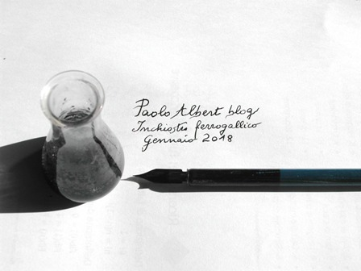

Non aspettatevi un granchè da questo post, nè tantomeno una cosa inedita; semplicemente è un esperimento talmente banale che l'ho sempre rimandato.
Come quel vecchio che abitava a Roma e non aveva mai visto il colosseo: è facile, ci andrò domani, diceva.
Oggi finalmente mi sono deciso a fare l'inchiostro ferro gallico.
Faccio la solita doverosa rogazioncina a San Google e cosa mi sputa fuori costui?
Mannaggia, mi sforna centomila inchiostri ferro gallici, in tutte le salse!
Ma è di gran moda allora! Galle da tutte le parti, sembra che non ci sia in Italia una quercia senza queste palle marroncine attaccate ad ogni foglia.
A un selvatico montanaro che frequenta i boschi come il sottoscritto, mai che capiti di vederla questa profusione gallesca... ma tant'è.
Vorrà dire che parlerò dell'inchiostro di mia nonna il minimo possibile, tanto tutto quello che qui manca lo si trova a camionate con pochi click, e poi io non amo le cose di moda.
Nella mia iniziale ingenuità avevo consultato pure il Turco (Nuovissimo Ricettario Chimico), quel ponderosissimo librone Hoepli che descrive un'infinità di formulazioni di ogni tipo, comprese quelle dei più disparati ed estinti inchiostri.
Ma quando è troppo è troppo ed allora ho fatto di testa mia.
Per fare l'inchiostro della nonna (si fa per dire, questo è l'inchiostro di sempre, fino alla nascita di László Bíró) servono tre cose chimiche:
- l'acido gallico (3,4,5-triidrossibenzoico)
- il solfato ferroso FeSO4.7H2O
- la gomma arabica (mix di polisaccaridi)
L'acido gallico l'avevo già fatto partendo dal tannino (link), e garantisco che è molto più divertente che mettere qualche galla in infusione nell'acqua.
(Però convengo che il mio procedimento odora "di chimica", e la chimica, come si sa, è brutta, cattiva, fa venire cose indicibili, eccetera, quindi i naturisti vadano in cerca di galle e non come ho fatto io)
Per fare di testa mia ho deciso di usare i tre componenti di cui sopra in rapporto 4:2:1 diluiti in 30 parti d'acqua.
Io ne ho fatto meno, ma in pratica, se si volessero fare per esempio 100 ml di inchiostro bello scuro servirebbero circa 12 grammi di acido gallico, circa 6 grammi di vetriolo verde e circa 3 grammi di gomma arabica.

Sciogliere per prima cosa la gomma arabica in tre quarti dell'acqua necessaria, scaldando un po' e mescolando con pazienza.
Aggiungere poi l'acido gallico e sciogliere pure questo.
Nel restante quarto dell'acqua sciogliere il solfato ferroso e alla fine unire le due soluzioni.
Si formerà immediatamente un liquido bello nero (con un po' di precipitato) che è l'inchiostro ferro gallico.
Tutto qui? Tutto qui.
Unendo le soluzioni si è formato gallato ferroso, già nero di suo, ma che diventa ancora più nero per esposizione all'aria (si ossida a gallato ferrico) appena lo si stende come scrittura su un foglio di carta.
Inutile fare tutta questa fatichina se poi non si riesce a procurarsi una penna di quelle vecchie, col pennino.
Magari quella col pennino a forma di manina dorata, con l'indice che scrive.
Senza questo indispensabile attrezzo è meglio mettersi a cercare un'anatra da spennare.
Ho cercato qualche giorno fa di reperire commercialmente i vecchi pennini, senza riuscirci.
Ne volevo uno e volevano vendermene almeno tre, lo volevo a prezzo onesto e a prezzo onesto non c'era, e allora anzichè pregare San Google ho fatto un pensiero a Sant'Antonio da Padova, il santo delle cose smarrite.
Ho rovistato a fondo nei vecchi cassetti di casa e la grazia è stata che son saltate fuori due vecchie belle penne, una di legno e una di plastica con relativo pennino! Perfetto!
Per farla breve, ecco il risultato:

Devo dire che l'inchiostro funziona perfettamente, scrive in nero intenso e non sbava, segno che la gomma arabica è giusta e fa il suo dovere addensante.
Il sale ferroso/ferrico impregna bene le fibre di cellulosa della carta e quindi è del tutto indelebile (ma devo farci un esperimentino... vedremo).
Scrivere con i vecchi pennini è sempre un'emozione, ma non bisogna aver fretta, soprattutto con un pennino nuovo non rodato che tende ad impuntarsi.
Scrittura talmente emozionante che se mi capita sottomano un'anatra (o meglio, un'oca) mi faccio dare una penna da lei e provo il ferro gallico con quella.
Poi faccio sapere.